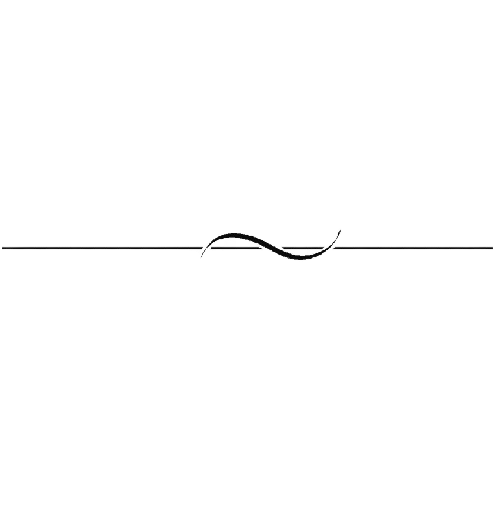

Howdy! My name is Reeve Baker, and I am a computer science major at Texas A&M University. I am also pursuing a minor in statistics and mathematics. I have a passion for learning as much as I can and want to share my love for learning with others. I am a strong problem solver, which is why I chose computer science. I enjoy complex problems and trying to figure out the best approach. I have 4 years of experience in Java from both high school and college. I also have 3 years of experience programming in Python and C++ from my own personal studies and college classes. I took Harvard's CS50 course during the summer of 2023. I learned how to create a website using HTML, CSS, and JavaScript. I also got to create an app using Flask and SQL to store data in a database. I have been a part of a couple clubs and projects at Texas A&M where I got to work on my communication and leadership skills. In the future, I hope to learn more about machine learning and artificial intelligence in my studies in college.

Change Appearance